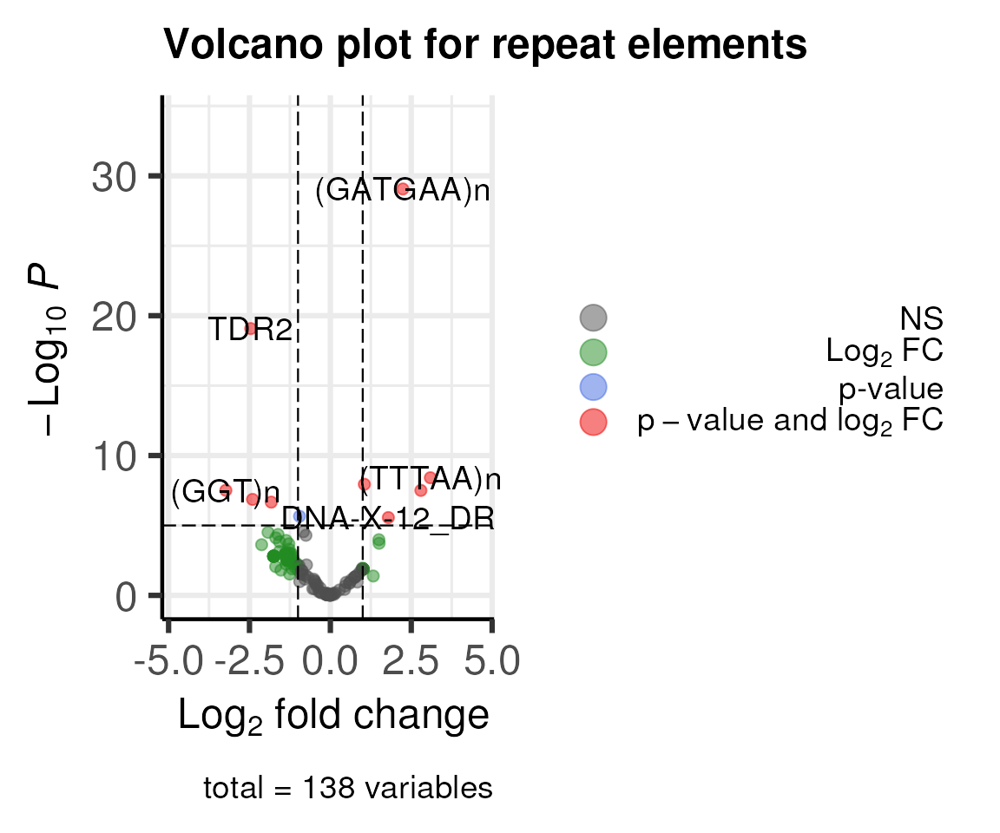
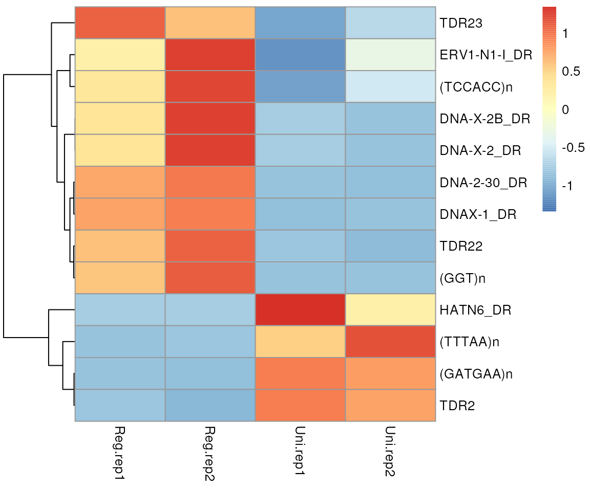
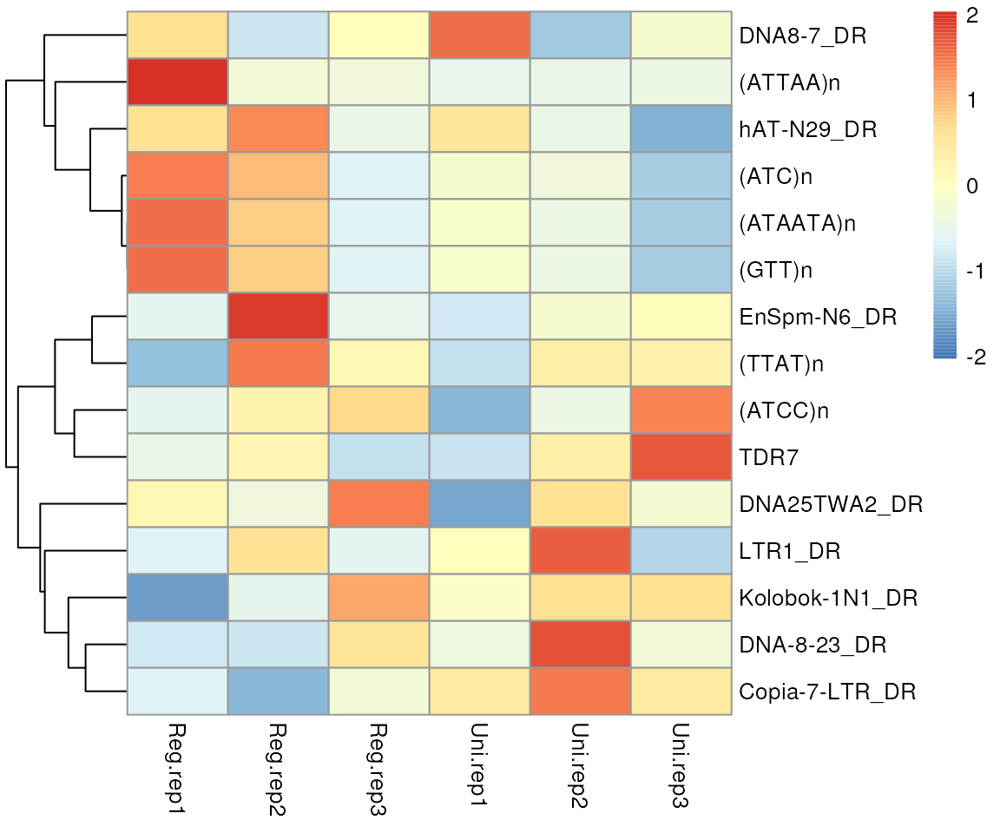

Transposable elements (TEs) play a role in fostering genetic diversity, instigating genome rearrangements, and exerting both positive and negative effects on the host organism. The regulation of these elements constitutes a dynamic and intricate process, involving host defense mechanisms to control their activity. The REdiscoverTE, presented in 2019 by Kong et al.1, showcased remarkable accuracy in TE quantification. It stands out as a significantly more comprehensive and accurate method for robust, whole-transcriptome quantification.
Nevertheless, the existing REdiscoverTE is constrained by the human genome assembly GRCh38. To broaden the scope of annotation to encompass more species, the ratte package has been devised. This package leverages the resources available within the Bioconductor community to prepare the necessary sequence files and annotations.
Here is an example using ratte with a subset of RNA-seq data.
First, install ratte and other packages required to run the
examples. Please note that the example dataset used here is from
zebrafish. To run analysis with dataset from a different species or
different assembly, please install the corresponding Bsgenome and TxDb.
For example, to analyze mouse data aligned to mm10, please install
BSgenome.Mmusculus.UCSC.mm10, and
TxDb.Mmusculus.UCSC.mm10.knownGene. You can also generate a
TxDb object by functions makeTxDbFromGFF from a local gff
file, or makeTxDbFromUCSC,
makeTxDbFromBiomart, and makeTxDbFromEnsembl,
from online resources in GenomicFeatures package. The BSgenome
package can be created by BSgenomeForge package.
Please note that the example dataset used here is from a small subset of zebrafish fin regeneration2.
The reference transcriptome includes:
Distinct RNA transcript sequences prepared by
GenomicFeatures::extractTranscriptSeqs function for output
of GenomicFeatures::exonsBy at transcript level.
Distinct sequences representing RE-containing introns by
GenomicFeatures::intronicParts.
Distinct RepeatMasker elements in the intergenic region.
In this manual, we will use the fish genome.
library(AnnotationHub)
library(BSgenome.Drerio.UCSC.danRer11)
## set genome, Drerio is a shortname for BSgenome.Drerio.UCSC.danRer11
genome <- Drerio
library(TxDb.Drerio.UCSC.danRer11.refGene)
txdb <- TxDb.Drerio.UCSC.danRer11.refGene ## give it a short name
ah <- AnnotationHub()
(rmsk <- query(ah, c('RepeatMasker', 'Zebrafish')))## AnnotationHub with 1 record
## # snapshotDate(): 2023-11-08
## # names(): AH98980
## # $dataprovider: UCSC
## # $species: Danio rerio
## # $rdataclass: GRanges
## # $rdatadateadded: 2022-01-31
## # $title: UCSC RepeatMasker annotations (Nov2017) for Zebrafish (danRer11)
## # $description: UCSC RepeatMasker annotations (Nov2017) for Zebrafish -Danio...
## # $taxonomyid: 7955
## # $genome: danRer11
## # $sourcetype: UCSC track
## # $sourceurl: https://functionalgenomics.upf.edu/annotationhub/repeatmasker/...
## # $sourcesize: NA
## # $tags: c("RepeatMasker", "UCSC")
## # retrieve record with 'object[["AH98980"]]'
rmsk <- rmsk[['AH98980']]We will use a subset of fish genome in this manual. Please skip this step if you want try the full fish genome.
rmsk <- readRDS(system.file('extdata', 'danRer11_rmsk_chr25_sub.RDS',
package='ratte'))The prepareSeq function will extract the sequences and
merge the RepeatMasker elements annotation. The saveFasta
function is uesed to export the sequences into a fasta file.
seq_anno <- prepareSeq(genome, txdb, rmsk,
## The subsetGRanges parameter is only used for subset the genome.
## Please remove this parameter for full fish genome.
subsetGRanges=GRanges('chr25:11000000-15000000'))
rna_outfile <- tempfile(fileext='.fa.gz')
saveFasta(seq_anno, rna_outfile)First we will create salmon index. In this example, we will just
export the command by setting dryrun parameter to TRUE.
prepareSalmonIndex(salmonPath='salmon',
FaFile=rna_outfile,
index='RNA_TEindex',
dryrun=TRUE)## salmon index --threads 2 -t /tmp/RtmpVHRAQO/file1285f0a120f.fa.gz -i RNA_TEindexSecond, we will align reads to salmon index.
alignReadsBySalmon('sample1.R1.fq.gz', 'sample1.R2.fq.gz',
output='sample1_salmon_output',
index='RNA_TEindex',
dryrun=TRUE)## salmon quant --seqBias --gcBias --index RNA_TEindex --libType A --validateMappings --threads 2 -o sample1_salmon_output -1 sample1.R1.fq.gz -2 sample1.R2.fq.gzOnce alignment is done, we will get quantification file named as
quant.sf. In this manual, we will load pre-aligned
files.
quant_sfs <- dir(system.file('extdata', 'RNA-seq', package='ratte'), 'quant.sf',
full.names=TRUE)
qnames <- sub("^.*\\/(.*?).quant.sf", "\\1", quant_sfs)The createDGELists function will extract counts number
from the quant.sf files and generate a list of
edgeR::DGEList object. The available choices for
select_feature are ‘all’, ‘exon’, ‘intron’, ‘gene’, and
‘intergenic’. Here we use all as an example. Please note
that the DGEList library size and normliazation factor will be
determined by gene level counts.
ys <- createDGELists(quant_sfs, qnames, seq_anno,
select_feature = 'all',
group=sub('.rep.', '', qnames),
remove.zeros = TRUE)## Removing 447 rows with all zero counts## Removing 2 rows with all zero counts## Removing 6 rows with all zero counts
names(ys)## [1] "repName" "repClass" "repFamily"
ys[[1]]## An object of class "DGEList"
## $counts
## Reg.rep1 Reg.rep2 Uni.rep1 Uni.rep2
## (A)n 22.143 27.214 28.546 19.000
## (AACTGA)n 11.239 17.000 11.000 4.000
## (AAT)n 11.000 7.000 47.000 46.000
## (AATA)n 8.006 8.000 15.529 7.001
## (AATAA)n 3.000 1.000 4.000 3.000
## 456 more rows ...
##
## $samples
## group lib.size norm.factors
## Reg.rep1 Reg 7605.759 1
## Reg.rep2 Reg 8182.806 1
## Uni.rep1 Uni 13468.979 1
## Uni.rep2 Uni 12068.875 1
##
## $tpm
## Reg.rep1 Reg.rep2 Uni.rep1 Uni.rep2
## (A)n 18.625446 19.844470 175.139452 160.457251
## (AACTGA)n 5.391495 6.781941 5.878126 2.179567
## (AAT)n 9.644679 11.832648 63.671101 68.940900
## (AATA)n 49.648589 46.288508 119.055364 94.325014
## (AATAA)n 3.411824 0.443921 3.333512 3.882252
## 456 more rows ...
library(edgeR)
library(EnhancedVolcano)
library(pheatmap)
y <- ys[['repName']]
keep <- filterByExpr(y)
y <- y[keep, keep.lib.sizes=TRUE]
design <- model.matrix(~y$samples$group)
y <- estimateDisp(y, design)
fit <- glmFit(y, design)
lrt <- glmLRT(fit, coef=2)
res <- as.data.frame(topTags(lrt, n=nrow(lrt)))
EnhancedVolcano(res,
lab=rownames(res),
x='logFC',
y='PValue',
title='Volcano plot for repeat elements',
subtitle = NULL,
legendPosition = 'right'
)
de <- res[abs(res$logFC)>2 & res$FDR<0.05, ]
plotdata <- y$tpm[rownames(de), ]
pheatmap(plotdata, scale = 'row', cluster_cols = FALSE)
The reference includes:
Distinct exon sequences prepared by BSgenome::getSeq
function for output of GenomicFeatures::exons.
Distinct sequences representing RE-containing introns by
GenomicFeatures::intronicParts.
Distinct RepeatMasker elements in the intergenic region.
For ATAC-seq, to prepare the sequences, the called peaks are required.
library(rtracklayer)
peaks <- import(system.file('extdata', 'merged.peaks.bed.gz',
package = 'ratte'),
format = 'bed')
atac_seq_anno <- prepareSeq(genome, txdb, rmsk, peaks)
atac_outfile <- tempfile(fileext='.fa.gz')
saveFasta(atac_seq_anno, atac_outfile)First we will create salmon index. In this example, we will just
export the command by setting dryrun parameter to TRUE.
prepareSalmonIndex(salmonPath='salmon',
FaFile=atac_outfile,
index='ATAC_TEindex',
dryrun=TRUE)## salmon index --threads 2 -t /tmp/RtmpVHRAQO/file128551ad5455.fa.gz -i ATAC_TEindexSecond, we will align reads to salmon index.
alignReadsBySalmon('sample1.R1.fq.gz', 'sample1.R2.fq.gz',
output='sample1_salmon_output',
index='ATAC_TEindex',
dryrun=TRUE)## salmon quant --seqBias --gcBias --index ATAC_TEindex --libType A --validateMappings --threads 2 -o sample1_salmon_output -1 sample1.R1.fq.gz -2 sample1.R2.fq.gzOnce alignment is done, we will get quantification file named as
quant.sf. In this manual, we will load pre-aligned
files.
atac_quant_sfs <- dir(system.file('extdata', 'ATAC-seq',
package='ratte'),
'quant.sf',
full.names=TRUE)
atac_qnames <- sub("^.*\\/(.*?).quant.sf", "\\1", atac_quant_sfs)The createDGELists function will extract counts number
from the quant.sf files and generate a list of
edgeR::DGEList object. The available choices for
select_feature are ‘all’, ‘exon’, ‘intron’, ‘gene’, and
‘intergenic’. Here we use all as an example. Please note
that different from RNA-seq data, the DGEList library size and
normliazation factor will be determined by all feature
counts.
atac_ys <- createDGELists(atac_quant_sfs, atac_qnames, atac_seq_anno,
select_feature = 'all',
group=sub('.rep.', '', atac_qnames),
norm_level='all',
remove.zeros = TRUE)## Removing 139 rows with all zero counts## Removing 1 rows with all zero counts
names(atac_ys)## [1] "repName" "repClass" "repFamily"
atac_ys[[1]]## An object of class "DGEList"
## $counts
## Reg.rep1 Reg.rep2 Uni.rep1 Uni.rep2
## (A)n 758.042 822.216 646.107 660.581
## (AAAT)n 0.000 1.000 0.000 1.000
## (AAC)n 0.000 0.989 0.000 0.000
## (AACTGA)n 342.003 383.003 324.614 334.387
## (AAT)n 408.034 331.100 304.965 320.125
## 575 more rows ...
##
## $samples
## group lib.size norm.factors
## Reg.rep1 Reg 248858.0 1
## Reg.rep2 Reg 262879.2 1
## Uni.rep1 Uni 231958.5 1
## Uni.rep2 Uni 238158.1 1
##
## $tpm
## Reg.rep1 Reg.rep2 Uni.rep1 Uni.rep2
## (A)n 547.01449 753.04628 828.20010 813.54697
## (AAAT)n 0.00000 128.19506 0.00000 135.77487
## (AAC)n 0.00000 1901.43632 0.00000 0.00000
## (AACTGA)n 94.26064 99.61734 85.43542 91.94861
## (AAT)n 375.63789 2240.41052 286.08757 306.64686
## 575 more rows ...
y <- atac_ys[['repName']]
keep <- filterByExpr(y)
y <- y[keep, keep.lib.sizes=TRUE]
design <- model.matrix(~y$samples$group)
y <- estimateDisp(y, design)
fit <- glmFit(y, design)
lrt <- glmLRT(fit, coef=2)
atac_res <- as.data.frame(topTags(lrt, n=nrow(lrt)))
EnhancedVolcano(atac_res,
lab=rownames(atac_res),
x='logFC',
y='PValue',
title='Volcano plot for repeat elements',
subtitle = NULL,
legendPosition = 'right'
)
atac_de <- atac_res[abs(atac_res$logFC)>log2(1.5) & atac_res$PValue<0.05, ]
plotdata <- y$tpm[rownames(atac_de), ]
pheatmap(plotdata, scale = 'row', cluster_cols = FALSE)
m <- merge(res, atac_res, suffixes = c(".RNA",".ATAC"),
by='row.names')
m <- m[order(-1*sign(m$logFC.RNA)*sign(m$logFC.ATAC),
sqrt(m$PValue.RNA^2 + m$PValue.ATAC^2)), ]
head(m, n=2)## Row.names logFC.RNA logCPM.RNA LR.RNA PValue.RNA FDR.RNA
## 54 DIRS-15_DR -1.260937 10.65210 7.941606 0.004831094 0.01514989
## 144 Mariner-N5_DR -1.281433 10.82231 9.597140 0.001948807 0.01053574
## logFC.ATAC logCPM.ATAC LR.ATAC PValue.ATAC FDR.ATAC
## 54 -0.2632025 9.99593 8.000676 0.004675988 0.09713198
## 144 -0.1369858 11.75537 7.019590 0.008062267 0.09713198
head(seq_anno[seq_anno$repName==m[1, 1], ])## DataFrame with 6 rows and 8 columns
## seqname feature repName repClass repFamily
## <character> <character> <character> <character> <character>
## 1 6f9e6fe1e4efb369c29c.. intron DIRS-15_DR LTR Ngaro
## 2 ff1ddbaa96922149aeb3.. intergenic DIRS-15_DR LTR Ngaro
## 3 7c6a1e4430f8eed7a669.. intergenic DIRS-15_DR LTR Ngaro
## 4 e78ec63e8c31d44a9387.. intergenic DIRS-15_DR LTR Ngaro
## 5 da2b9f4bb6f238c3c84c.. intergenic DIRS-15_DR LTR Ngaro
## 6 200174837548a59bfeca.. intergenic DIRS-15_DR LTR Ngaro
## N idx seq
## <integer> <character> <DNAStringSet>
## 1 1 chr25:14255135-14255.. GTCAGTGATC...TTCCCACCAG
## 2 1 chr25:12588233-12588.. GAGAGAAGCA...ACCAGGCGGG
## 3 1 chr25:13719473-13719.. CTTGGTTATG...CCAGTCACTG
## 4 1 chr25:14323030-14323.. TACGGACAAT...TACCTACTAC
## 5 1 chr25:14484863-14484.. CAGCGTTGGG...CCCAACACTG
## 6 1 chr25:14867720-14867.. GGGCGTCACT...TCGCACCCTG## R Under development (unstable) (2023-11-22 r85609)
## Platform: x86_64-pc-linux-gnu
## Running under: Ubuntu 22.04.3 LTS
##
## Matrix products: default
## BLAS: /usr/lib/x86_64-linux-gnu/openblas-pthread/libblas.so.3
## LAPACK: /usr/lib/x86_64-linux-gnu/openblas-pthread/libopenblasp-r0.3.20.so; LAPACK version 3.10.0
##
## locale:
## [1] LC_CTYPE=en_US.UTF-8 LC_NUMERIC=C
## [3] LC_TIME=en_US.UTF-8 LC_COLLATE=en_US.UTF-8
## [5] LC_MONETARY=en_US.UTF-8 LC_MESSAGES=en_US.UTF-8
## [7] LC_PAPER=en_US.UTF-8 LC_NAME=C
## [9] LC_ADDRESS=C LC_TELEPHONE=C
## [11] LC_MEASUREMENT=en_US.UTF-8 LC_IDENTIFICATION=C
##
## time zone: Etc/UTC
## tzcode source: system (glibc)
##
## attached base packages:
## [1] stats4 stats graphics grDevices utils datasets methods
## [8] base
##
## other attached packages:
## [1] pheatmap_1.0.12
## [2] EnhancedVolcano_1.21.0
## [3] ggrepel_0.9.4
## [4] ggplot2_3.4.4
## [5] TxDb.Drerio.UCSC.danRer11.refGene_3.4.6
## [6] GenomicFeatures_1.55.1
## [7] AnnotationDbi_1.65.2
## [8] Biobase_2.63.0
## [9] BSgenome.Drerio.UCSC.danRer11_1.4.2
## [10] BSgenome_1.71.1
## [11] BiocIO_1.13.0
## [12] Biostrings_2.71.1
## [13] XVector_0.43.0
## [14] AnnotationHub_3.11.0
## [15] BiocFileCache_2.11.1
## [16] dbplyr_2.4.0
## [17] edgeR_4.1.2
## [18] limma_3.59.1
## [19] rtracklayer_1.63.0
## [20] GenomicRanges_1.55.1
## [21] GenomeInfoDb_1.39.1
## [22] IRanges_2.37.0
## [23] S4Vectors_0.41.2
## [24] BiocGenerics_0.49.1
## [25] ratte_0.0.3
## [26] BiocStyle_2.31.0
##
## loaded via a namespace (and not attached):
## [1] RColorBrewer_1.1-3 jsonlite_1.8.7
## [3] magrittr_2.0.3 farver_2.1.1
## [5] rmarkdown_2.25 fs_1.6.3
## [7] zlibbioc_1.49.0 ragg_1.2.6
## [9] vctrs_0.6.4 memoise_2.0.1
## [11] Rsamtools_2.19.2 RCurl_1.98-1.13
## [13] htmltools_0.5.7 S4Arrays_1.3.0
## [15] progress_1.2.2 curl_5.1.0
## [17] SparseArray_1.3.1 sass_0.4.7
## [19] bslib_0.6.0 desc_1.4.2
## [21] cachem_1.0.8 GenomicAlignments_1.39.0
## [23] mime_0.12 lifecycle_1.0.4
## [25] pkgconfig_2.0.3 Matrix_1.6-3
## [27] R6_2.5.1 fastmap_1.1.1
## [29] GenomeInfoDbData_1.2.11 MatrixGenerics_1.15.0
## [31] shiny_1.8.0 digest_0.6.33
## [33] colorspace_2.1-0 rprojroot_2.0.4
## [35] textshaping_0.3.7 RSQLite_2.3.3
## [37] labeling_0.4.3 filelock_1.0.2
## [39] fansi_1.0.5 httr_1.4.7
## [41] abind_1.4-5 compiler_4.4.0
## [43] bit64_4.0.5 withr_2.5.2
## [45] BiocParallel_1.37.0 DBI_1.1.3
## [47] highr_0.10 biomaRt_2.59.0
## [49] rappdirs_0.3.3 DelayedArray_0.29.0
## [51] rjson_0.2.21 tools_4.4.0
## [53] interactiveDisplayBase_1.41.0 httpuv_1.6.12
## [55] glue_1.6.2 restfulr_0.0.15
## [57] promises_1.2.1 grid_4.4.0
## [59] generics_0.1.3 gtable_0.3.4
## [61] tzdb_0.4.0 data.table_1.14.8
## [63] hms_1.1.3 xml2_1.3.5
## [65] utf8_1.2.4 BiocVersion_3.19.1
## [67] pillar_1.9.0 stringr_1.5.1
## [69] later_1.3.1 splines_4.4.0
## [71] dplyr_1.1.4 lattice_0.22-5
## [73] bit_4.0.5 tidyselect_1.2.0
## [75] locfit_1.5-9.8 knitr_1.45
## [77] bookdown_0.36 SummarizedExperiment_1.33.0
## [79] xfun_0.41 statmod_1.5.0
## [81] matrixStats_1.1.0 stringi_1.8.2
## [83] yaml_2.3.7 evaluate_0.23
## [85] codetools_0.2-19 tibble_3.2.1
## [87] BiocManager_1.30.22 cli_3.6.1
## [89] xtable_1.8-4 systemfonts_1.0.5
## [91] munsell_0.5.0 jquerylib_0.1.4
## [93] Rcpp_1.0.11 png_0.1-8
## [95] XML_3.99-0.15 parallel_4.4.0
## [97] ellipsis_0.3.2 pkgdown_2.0.7
## [99] readr_2.1.4 blob_1.2.4
## [101] prettyunits_1.2.0 bitops_1.0-7
## [103] scales_1.2.1 purrr_1.0.2
## [105] crayon_1.5.2 rlang_1.1.2
## [107] KEGGREST_1.43.0